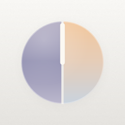

节律Cadence · 1.4.2
带优先级颜色的日历。年 / 月 / 周视图、今日页、课表、记录日历和纪念日历放在一个应用里；网页、iPhone、Mac、安卓四端用同一份数据。免费，无广告、无内购。
功能
年 / 月 / 周三种视图
双指捏合切换。月视图逐周滚动、始终 6 行，跨天的全天事件连成一整条；月份和星期悬浮在日历上，整页都是内容。
带优先级的事件
单个或批量添加，支持时间段、多天、重复和提醒。优先级用拖动条选，四档颜色按色彩心理设计，色弱也能分辨。
今日页与四象限
从底部的时钟胶囊展开今天：已逾期、今天和接下来要做的事一目了然；也可以按重要 / 紧急四象限铺开。
日程（课表）
从网页复制的表格、保存的 .html 或课表照片识别导入。课程按科目自动配色，在色环上均匀分开，不会撞色。
记录日历
和主日历分开的打卡 / 习惯记录，可以给每天打等级，配统计和热力图。每个日历单独决定是否显示在主日历、是否通知。
纪念日历
纪念日倒数 / 正数、封面和提醒，可以生成一张干净的分享图，直接发给朋友或存进相册。
用自己的存储同步
数据存在你自己的 GitHub 私密 Gist、WebDAV 或 iCloud 云盘（苹果 App）里，各端互通。没有我们的服务器。
准时的提醒
App 里由系统按时弹出，关着、断网也准；网页版在 App 关闭时也可以通过 GitHub Actions 推送提醒。
桌面小组件
整月、今日、课表三种小组件，iPhone、Mac、安卓原生都有，样式和颜色与 App 一致。
颜色就是优先级
从左到右，低 → 高。颜色按色彩心理学挑选：越重要越暖、越醒目。深色模式下自动换成同色相的柔和色调。
浅色 / 深色外观，配色取自图标；支持简体中文、繁體中文、English、Français、日本語；12 / 24 小时制默认跟随地区。
四个平台，一份数据
界面都是同一份网页，网页一更新各端打开就是新版，不用重新安装。原生 App 额外提供系统提醒、桌面小组件和液态玻璃底栏。
网页 PWA
任何现代浏览器打开就能用，可以添加到主屏幕离线使用。
- iPhone：Safari 打开 → 分享 → 添加到主屏幕
- 安卓 / 电脑：Chrome、Edge 地址栏里点「安装」
- 设置 → 连接 GitHub，粘贴只勾了
gist权限的令牌即可同步
iPhone
iOS 26 及以上不上 App Store，用 AltStore 或 SideStore 安装（用你自己的免费 Apple ID 签名、后台自动续期）。液态玻璃底栏、系统提醒、桌面小组件。
- 装好 AltStore（需要 Mac）或 SideStore（装好后不再需要电脑）
- Sources → + → 添加下面的源，找到「节律」安装
- 第一次要在 设置 → 隐私与安全性 里打开「开发者模式」
https://cdn.jsdelivr.net/gh/SalmangoX/month-calendar@dist-ios/source.json
Mac
macOS 14 及以上窗口里是网页版，关掉窗口后留在菜单栏，点日历图标看本月和当天；桌面小组件、系统通知；macOS 26 上是液态玻璃。
- 下载 .dmg，把 Cadence 拖进「应用程序」
- 第一次打不开：系统设置 → 隐私与安全性 → 「仍要打开」
- 菜单栏会提示新版本，点「更新…」即可
安卓
APK · 约 3 MB网页界面加原生的底部悬浮控件；桌面小组件（整月 / 今日 / 课表）、系统精确闹钟提醒、每 15 分钟后台同步。
- 在 Releases 下载
month-calendar.apk并安装 - 三星提示被拦截：先关掉「自动拦截器」，装完再打开
- 以后在 设置 → 安卓 App 里检查更新，覆盖安装不丢数据
| 当前版本 | 1.4.2 |
|---|---|
| 价格 | 免费，无广告、无内购 |
| 数据与隐私 | 不需要注册；数据在你的设备和你自己的 GitHub / WebDAV / iCloud 里。隐私政策 |
| 源码 | github.com/SalmangoX/month-calendar |